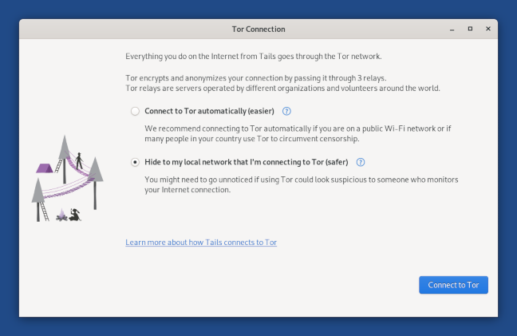

Connecting to a local network
You can connect to a local network using a wired, Wi-Fi, or mobile data connection:
Open the system menu in the top-right corner.

If a wired connection is detected, Tails automatically connects to the network.
To connect to a Wi-Fi network, choose Wi-Fi Not Connected and then Select Network.
If there is no option to connect to a Wi-Fi network, your Wi-Fi interface is not working in Tails. See our documentation on troubleshooting Wi-Fi not working.
- To connect to a mobile data network, choose Mobile Broadband.
It is currently impossible to connect to a network using:
- Dial-up modems.
- VPNs, see the corresponding FAQ.
After you connect to a local network, the Tor Connection assistant appears to help you connect to the Tor network.

For more information, open GNOME Help and choose Networking, web & email.
Saving your network settings
To remember the password for Wi-Fi networks and custom network configurations across different Tails sessions, turn on the Network Connections feature of the Persistent Storage.
Modifying your network settings
To modify your network settings, for example, to configure whether or not to automatically connect to a Wi-Fi network, do the following:
Open the system menu in the top-right corner.
Click on the button to open the system settings.
Choose Network.